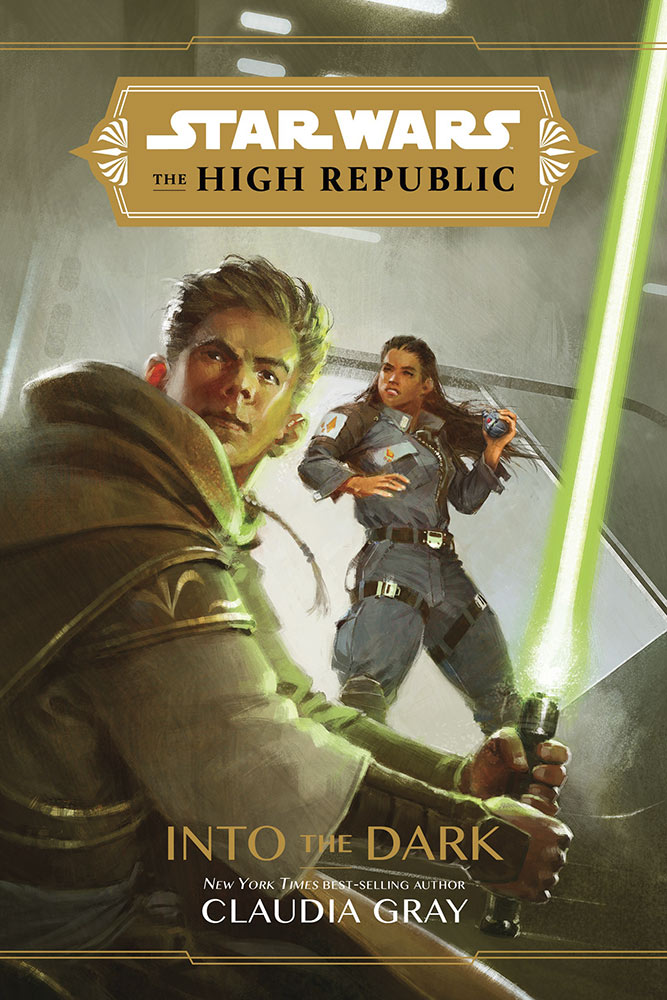

THE JEDI PREPARE FOR A NEW MISSION IN STAR WARS: THE HIGH REPUBLIC: INTO THE DARK – EXCLUSIVE EXCERPT
The High Republic-era Jedi, with their gilded tunics, dressed pretty snazzy. They didn’t necessarily travel that way. In StarWars.com’s exclusive excerpt of Into the Dark, the young adult Star Wars: The High Republic novel by Claudia Gray, Jedi Orla Jareni, Cohmac Vitus, Reath Silas, and Dez Rydan are about to start a new mission. First, however, they must rendezvous with the ship and its crew that will provide transport — and they’re not at all what our heroes expect. Read the preview and listen to a clip from the audiobook edition below, and get ready for the arrival of Into the Dark on February 2.
At that moment, Reath’s attention—and everyone else’s—was distracted by a ship flying through the spaceport, rather low, then landing squarely on the pad where their transport ought to have been. It was an unusual ship, at least to Reath: its plating was dark blue, and its cockpit and engines both rounded to the point of being bulbous. Either it had been built a very long time before, or the beings who built it didn’t bother keeping up with technological developments—which was a troubling thought. As it settled onto the pad, the Jedi all exchanged glances.´ “Looks more like a transport ship than a passenger craft,” Master Cohmac said. “Who cares? It can make hyperspace, can’t it?” Dez grinned as displaced air ruffled their hair and robes with a hiss.